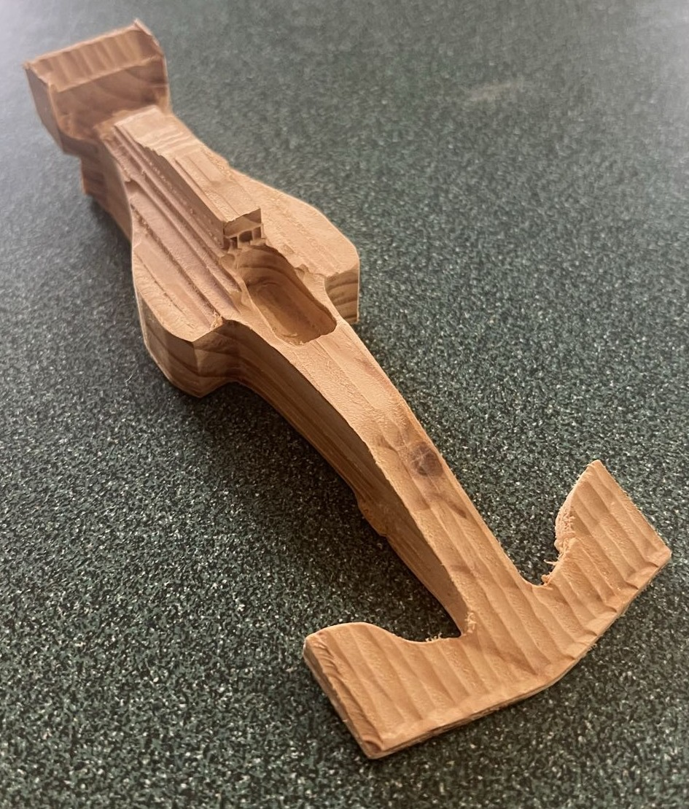
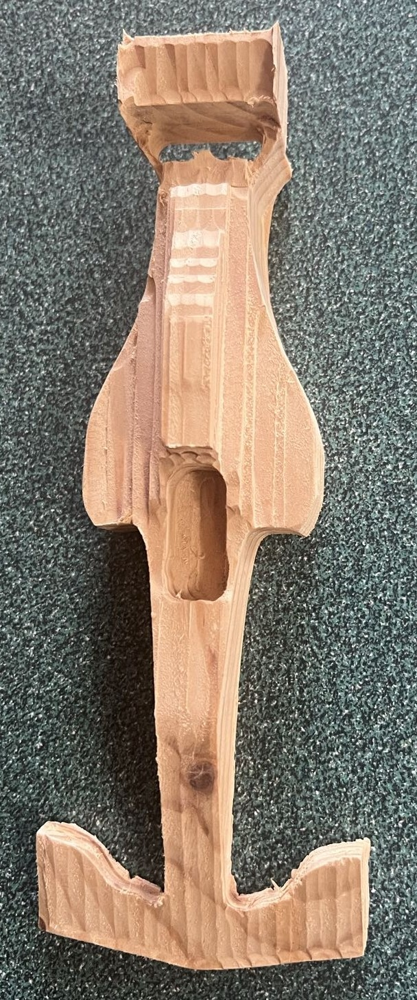

Jump to Section:
CNC Router
I started this project to reduce downtimes when my high school was closed, meaning my robotics teams couldn't use the CNC mill in our workshop. The goal was to have an 18x18x1" working area with the ability to cut sheet metal (mainly aluminum).
Original Design
The original design is based heavily on a machine made by Ivan Miranda and posted on YouTube. Design work was done in Autodesk Inventor over a summer break from high school. Originally, the plan was to try making a compact system that could be put on a cart and moved to another location. However, during the design process, the machine got larger to suit the desired work area and the deadspace that resulted from the overall design. Geared Nema-23 stepper motors attached to belts drove the X and Y Axes while a standard Nema-23 connected to a lead screw drove the Z-Axis. The spindle was a Makita router with speeds from ~10,000RPM to ~30,000RPM. The control system was an Arduino Uno running GRBL with a CNC shield running the stepper motors.
(Design work was done before I knew how to use parameters and cross-file dimensioning.)


Top Left: Aligning linear rails for the Y-Axis. Top Right: X-Axis gantry installed with Z-Axis lead screw in place. Bottom Left: CNC towards the end of fabrication. Bottom Right: Mechanically complete CNC with electronics in progress.
Fabrication
Fabrication occurred over winter break of 2020. The sets of linear rails were aligned using precision measurements from a digital calipers before match drilling most of the holes in each rail. 3D-printed parts were all printed in PLA on a Creality Ender 3. The frame of the machine is aluminum while all hardware is steel. Wiring terminated in screw terminals or DuPont connectors. Some 3D-printed parts involving electronics needed to be altered using an old soldering iron. To allow for cables to extend out from the Arduino. The trickiest part of the assembly process was connecting the printed parts to the carriage blocks without the carriage blocks running off their tracks. Otherwise, fabrication went rather smoothly.
Testing
During testing, many things went wrong. The most important being the inability to cut aluminum at a decent rate and tolerance. The rigidity of the machine and power of the Makita router combined to make cutting metal difficult. The bit would walk wherever stress was less and the spindle didn't have a DRO, so determining the exact RPM of the cutter was inconvenient. Other problems were less impactful but still worth remedying in the redesign. These included hexagonal indents for large bolts creating cracks, weak 3D-printed parts (with long replacement prints), and a lack of a machine position (no endstops).

Setting up the CNC router programming through Universal Gcode Sender

Watching and collecting dust while cutting plywood

A closer view of the CNC actively cutting wood

The end product. The collet wasn't fully tightened so the part had to be aborted.

An attempt at cutting aluminum

A broken plastic part due to a loose clamp allowing the spindle to lower too far

The misalignment between the two Y-Axis rails after testing
Redesign
The main purpose of the redesign is to enable the machine to cut aluminum. This required improving the machine's ability to hold its position when cutting aluminum. Along the way, the other minor issues will also be remedied.
Lead Screws
I determined the walking bit was a result of the belt drive system forcing the motor to need to hold its position, which stepper motors can't do. Thus, I decided to convert the machine to a lead screw actuation method. This resulted in drastic modification of many 3D-printed parts to make printing easier while reducing the number of extra parts needed for the modifications. Each lead screw would be attached to the motor with a flexible adapter and held up on the opposite side by a bearing pressed into a printed housing.
Endstops
While the machine could be used without endstops, I wanted to add them to prevent damage, especially with printed parts in use. I settled on using plunger switches for the X and Y axes and a lever switch for the Z axis. These would be added to one side of each axis and a soft limit would stop motion on the opposite side.
Spindle Swap
To add some precision to the CAM operations and to simplify the design of some printed parts, I decided to swap to a VFD driven spindle. The VFD means I can see what RPM the spindle is running at, so I know how fast I should set the feedrate. However, I'm not connecting the VFD to the controller, so there's an extra step during operation.


Final Product
After finishing the planned modifications, I needed to add collars to compress the couplers between the motors and lead screws to remove the easy walking the machine could do because the couplers were flexible. When integrating the endstops I discovered that there was too much electromagnetic interference, which caused false triggers of the alarm. This was temporarily solved using a low-pass RC filter on a breadboard for each endstop. In the future, I plan to machine aluminum parts to replace the plastic and redesign the controller box to fit the endstop filters.
Work Area: 16.5 x 16.3 x 3.1"
Step Resolution: 56,562 x 56,562 x 7,124 Steps/in
Spindle RPM: ~5,000 - ~24,000
Materials Cut: Wood, Foam, and Aluminum

Sample Work
One thing I created with my CNC is a simple wooden F1 car. I modeled the car based on top and side profiles of an F1 car to get the shape correct. I then created the CAM profiles in Autodesk Inventor (only using a square endmill because that's all I had). The CNC router cut the part very accurately, and I was able to clean up the part with a few cuts to remove areas the router couldn't reach.

